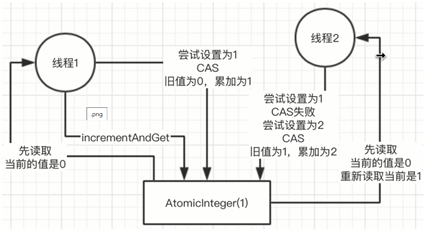

图解

定义
CAS会操作3个数字，当前内存中的值，旧的预期值，新的修改值，只有当旧的预期值跟内存中的值一样的时候，才会将内存中的值修改为新的修改值。举个例子吧，比如int a = 3，这是内存中的当前值，然后你CAS（3, 5），第一个是旧的预期值，如果3和a是一样的，那么就将a修改为5。其实吧，这里比较关键的一点就是cpu的compareAndSwap操作的原理是啥，以CPU（Intel X86）来举个例子。这块底层指令，会根据当前处理器类型，来决定要不要对一个cmpxchg指令加lock前缀，如果是单处理器，就不要加，因为自动保证顺序；但是如果是多处理器，就加个lock。intel对lock的定义，就是说加了lock之后，就会自动锁掉一块内存区域，然后同一时间只有一个处理器可以读写这块内存区域，其他处理器就不行了。
CAS缺点
- ABA问题：如果某个值一开始是A，后来变成了B，然后又变成了A，你本来期望的是值如果是第一个A才会设置新值，结果第二个A一比较也ok， 也设置了新值，跟期望是不符合的。所以atomic包里有AtomicStampedReference类，就是会比较两个值的引用是否一致，如果一致，才会设置新值 假设一开始变量i = 1，你先获取这个i的值是1，然后累加了1，变成了2。但是在此期间，别的线程将i -> 1 -> 2 -> 3 -> 1这个期间，这个值是 被人改过的，只不过最后将这个值改成了跟你最早看到的值一样的值。结果你后来去compareAndSet的时候，会发现这个i还是1，就将它设置成了2， 就设置成功了。说实话，用AtomicInteger，常见的是计数，所以说一般是不断累加的，所以ABA问题比较少见
- 无限循环问题：大家看源码就知道Atomic类设置值的时候会进入一个无限循环，只要不成功，就不停循环再次尝试，这个在高并发修改一个值 的时候其实挺常见的，比如你用AtomicInteger在内存里搞一个原子变量，然后高并发下，多线程频繁修改，其实可能会导致这个compareAndSet()里 要循环N次才设置成功，所以还是要考虑到的。
- 多变量原子问题：一般的AtomicInteger，只能保证一个变量的原子性，但是如果多个变量呢？你可以用AtomicReference，这个是封装自定 义对象的，多个变量可以放一个自定义对象里，然后他会检查这个对象的引用是不是一个。